运行时改造的 UE6 游戏 × 生成式视频 · 实验记录
为什么改 UE 对象:02/03 把"游戏画面 → 生成式 API 风格化"走到了头,04 的逆向重建给出定量结论——Seedance 把几何锚在参考图上,prompt 只是软约束,船的外形注定漂。既然生成端锁不死几何,那就调头把参考造型建进引擎:UE 对象长成什么样,渲染出来就是什么样,几何由引擎保证,风格化交给下游。这是本站主线的转折点。
飞艇尾部原本是三块 12cm 厚的方板,纯占位。用户的要求:改成参考图(NB2 编辑图 / Seedance 成片)里那种大后掠叶片尾鳍。这一条实验记录讲两件事:鳍本身怎么从目测调参走到解析求解,以及为了让"改一个常数、看三个机位"这个循环不再痛苦,搭出来的快速迭代实验台。
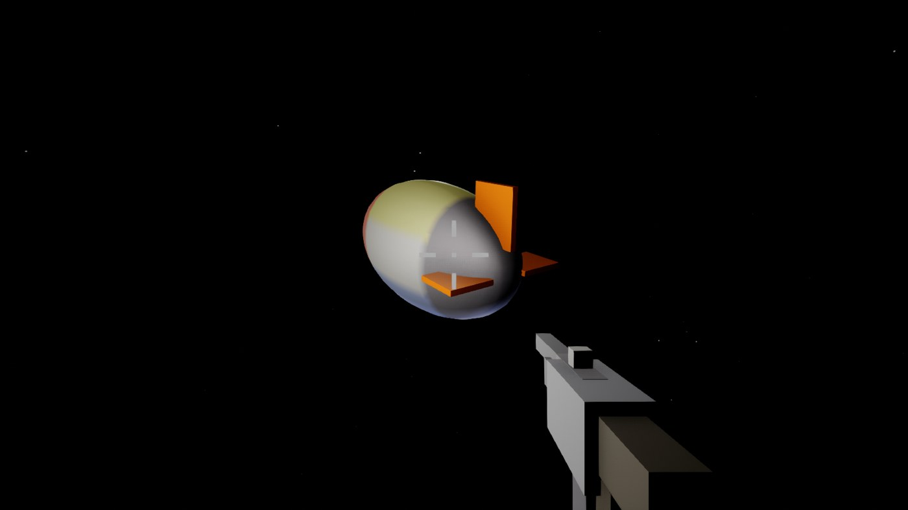
翼型规格不是拍脑袋,是读图 agent 对 Seedance 成片逐帧做像素测量得到的。下表左列是参考测量,右列是 _as_fins(story/g_airship.py)里最终落地的实现值:
| 参数 | 参考成片测量 | 实现(代码) |
|---|---|---|
| 布局 | 十字形 4 片同型(背/腹/左/右) | 同,4 片 × 每片 2 个 actor,共 8 个 |
| 根弦 | ~0.52–0.55a(a = 长半轴) | 0.60a |
| 尖弦 | ~0.4× 根弦 | 0.40× 根弦 |
| 后缘 | 与尾尖齐平,垂直于船轴 | 同(TE 矩形贴 tail tip) |
| 前缘后掠 | ~45–50° | 42° |
| 翼尖线 | 平行船轴 | 同,位于 1.60× 径向半轴处 |
| 厚度 | —(薄板) | 11 uu |
| 颜色 | sRGB ~#DC732D | linear (0.72, 0.20, 0.03) |
每片叶 = 后缘薄矩形(BasicShapes Cube)+ 前缘掠三角(BasicShapes Cone 压扁充当三角形;100uu、pivot 居中、apex 朝 +Z,类引用在 boot 链里已 pin 进 RX['cls'])。全部无碰撞纯装饰,tint 走 BasicShapeMaterial 的 MID——运行时禁止新建材质,这是 HOTPATCH 法则 8,授课费已交过。掠三角的姿态由 Yaw(Z)·Pitch(Y)·Roll(X) 组合旋转给出,四片各有一组 rotator。所有 actor 挂进 _AS['fins'],respawn/off 的销毁逻辑因此保持通用,不需要为鳍写专门的清理分支。全部翼型参数打包成 fin_spec 写入 episode.json 与 manifest.jsonl——训练数据如实记录几何,下游不用反猜。
v1 到 v3 是常规打法:改常数、拍侧视、目测。三轮都卡在同一个几何事实上——这条船是个胖椭球(长/高 ≈ 1.9,参考船 2.7–2.8),轮廓外可见的径向带很窄,掠形三角大半埋进壳里,露出来的部分看着像曲棍球杆,不像后掠翼。
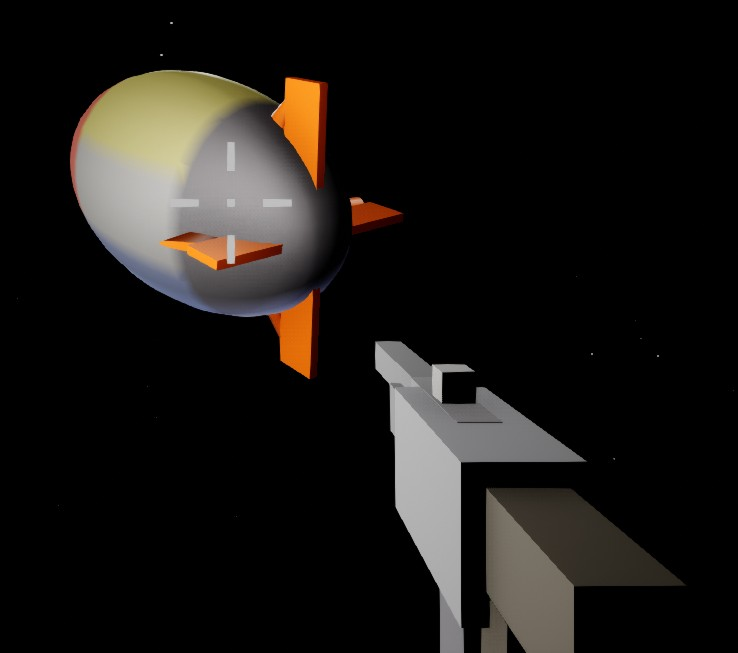
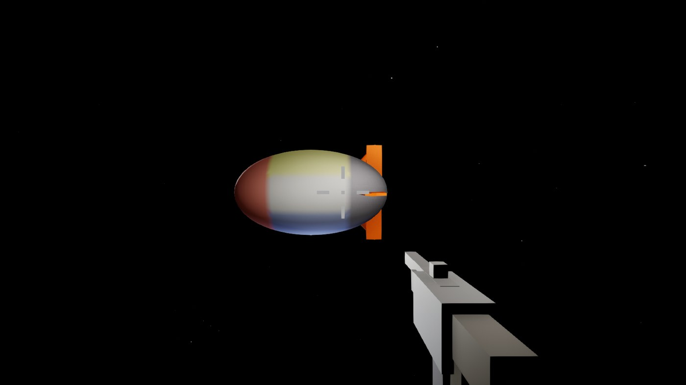
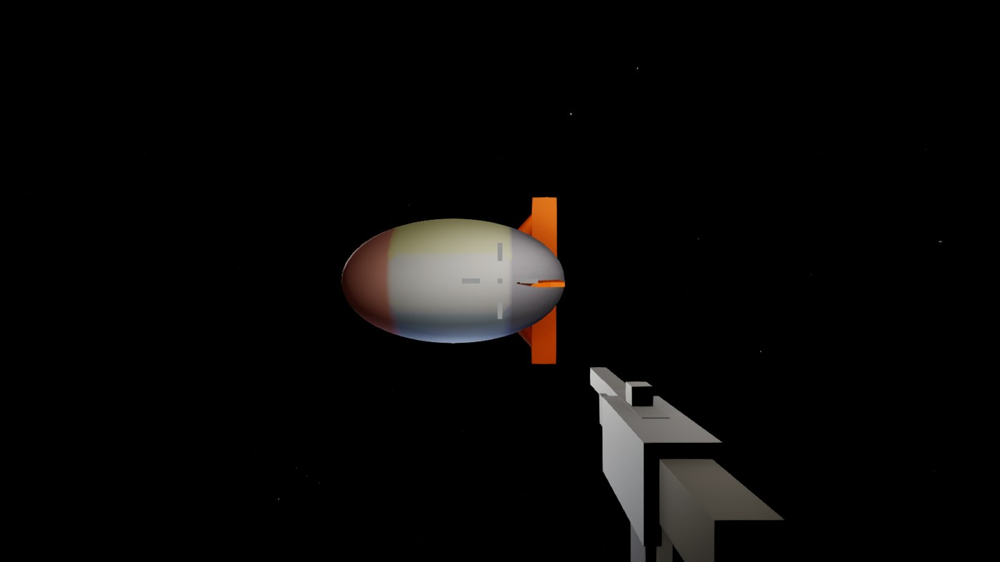
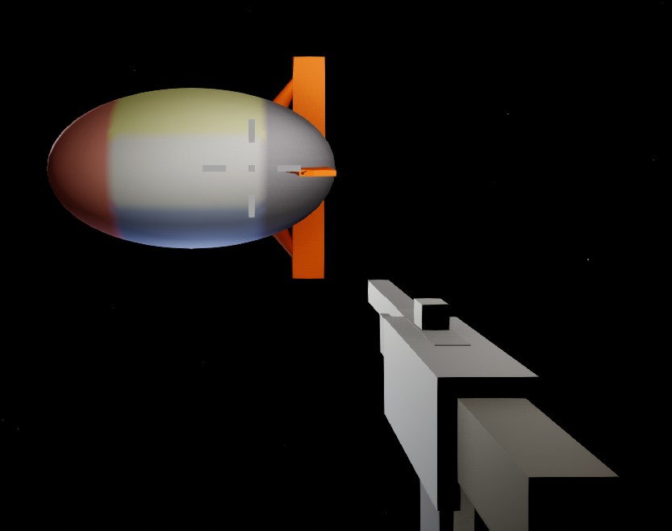
v4 的做法:不再猜锥体摆哪,而是把它当约束求解——给定翼尖目标点、翼根埋入半径(0.40× 半轴)、后掠角 42°,反解出锥体的缩放、中心与旋转。倾角 t 下 apex 相对中心的偏移是 (−sin t, +cos t)·H/2,base 中心取镜像,actor 中心即两者中点;斜边长 H = (r_apex − r_base)/cos t。三个输入定死,输出唯一。
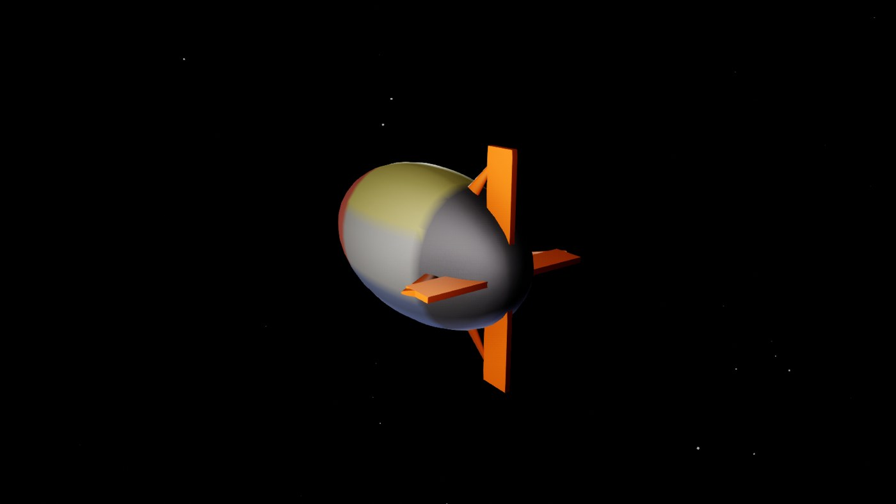
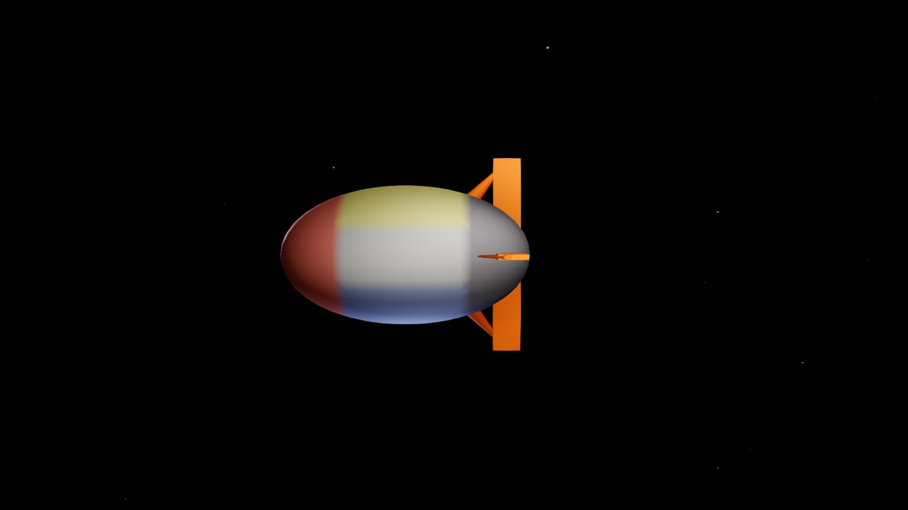
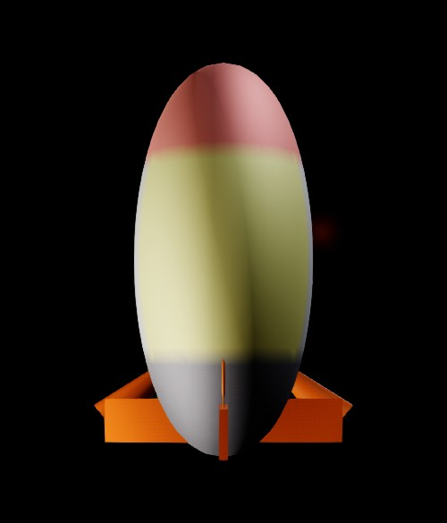
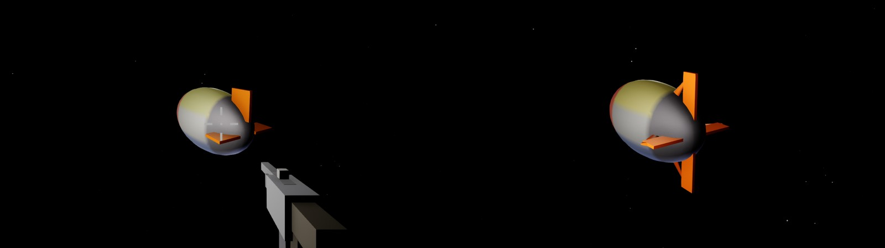
促成实验台的是用户的一句吐槽:循环太慢。旧流程里,摆机位和导图是分开发送的指令,一轮看 3 个机位要 6 次 WebSocket 往返,而且每次重建都全量重烤船壳的 MC 网格——壳根本没变,烤它纯属浪费。重构后的 _fin_lab.py:一次发送完成一整轮——只重建鳍(不烤壳),用一个私有 SceneCapture2D(bCaptureEveryFrame=False,按需 CaptureScene())在三个机位各拍一张,落盘三张图。单轮循环约 8 秒。
上面的叶片交付后,用户的判词是:"形状和几何和图片里的还是不一样。"复盘发现两个耦合错误: 其一,v4 的鳍是"高窄型"——为了在胖船上露出鳍,把翼尖半径从参考的 1.30× 拉到 1.60×,翼展反超弦长,读起来像船桨; 参考鳍是"矮长型",根弦大于露出翼展(纵横比 ≈0.75)。其二,根因在船体:参考船长细比 2.7–2.8,我们的椭球只有 1.9—— 胖船上鳍要么埋进轮廓、要么拉高变桨,比例注定两难。
船体半径改为 300–330 / 100–118 / 105–125(a=330 顶着 MC brick 上限 792),长细比 2.7–2.9;
鳍回到参考数字:翼尖 1.45×半轴、根弦 0.55a、尖弦 0.37×根弦、后缘悬伸 0.06a 越过尾尖,掠角由平面目标点反解;
灰色尾锥(底径 0.34c、长 0.8c)填满椭球尾尖收窄后鳍根悬空的区域;涂装同步参考:白船身(原黄背条)、暗红鼻(u>0.45,占身长约 28%)、软化蓝腹。
paint 字典移入 _AS['paint'],episode.json 直接读取,不再有硬编码副本。
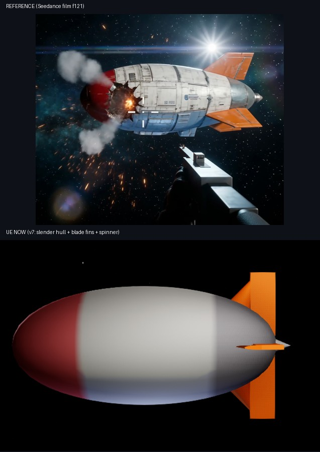
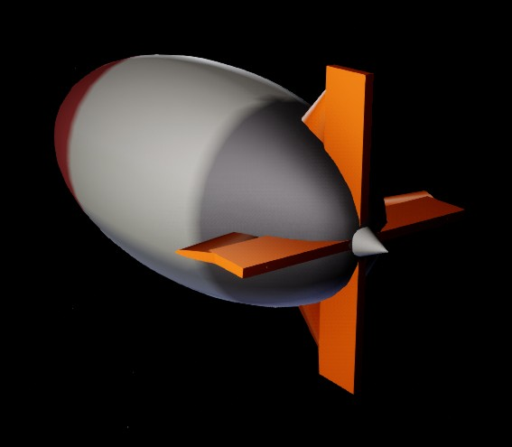
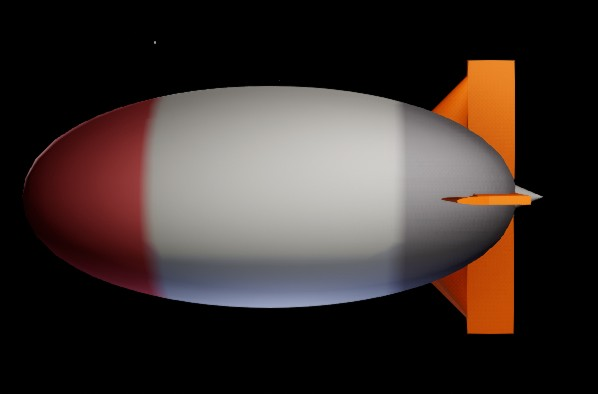
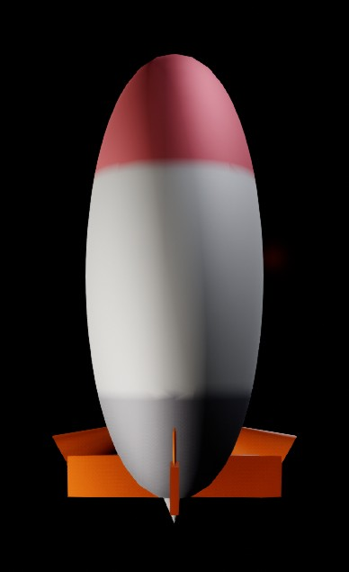
参考船尾部是内凹收锥的旋成体,鳍骑在收锥段上;我们的椭球尾部是凸钝尾,鳍前缘根部会没入壳体。
要彻底消掉这一档差距得做 SDF 级手术(椭球 → 带尾锥的雪茄剖面),会连带 _as_ray 解析求交、瞄准采样、法线与涂装参数化五处——单独立项。
表面面板纹理/做旧属于风格层,留给下游编辑 API。